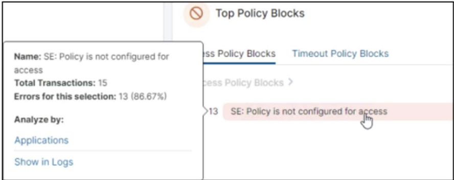
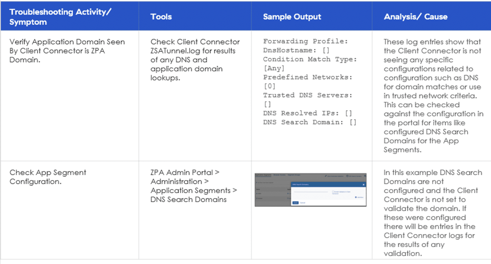

Granular control policies (URL & Cloud App Control, File Type Controls, Firewall), Application Segment design for ZPA (5 deployment methods, characteristics, what NOT to use), Segment Groups, Application Tenant Restriction, and the diagnostic workflow when a user can't reach a private application. The layer where ZIA and ZPA stop being "deployed" and start being "tuned".
Initial protection is broad. Access control is where it becomes specific.
The earlier sections got connectivity, identity, and platform services in place — every user can reach Zscaler, prove who they are, and get the platform's baseline protections. Section 6 is where you encode the customer's actual business rules: which URLs, which apps, which file types, which firewalls, which ZPA application segments, and how to diagnose the inevitable "but I can't reach my app" ticket.
💭THINK FIRST · OVERVIEW
Access Control Services brings together five different policy surfaces — URL/Cloud Apps, File Types, Firewall, Application Segments, Tenant Restriction. Before reading on, ask yourself: why are these grouped together as one course, when each could be its own deep-dive?
The course pitches itself as moving "from initial broad protections to implementation tuned to the customer." What is the cost of staying at broad protections too long — and what is the cost of tuning too aggressively, too soon?
Five lessons of this course are about ZPA Application Segments alone. Why does ZPA get so much more attention than ZIA's URL/firewall in this course, when both are "access control"?
The very last lesson is "Verify Private Application Reachability." Why is the reachability check placed at the end of access control, instead of at the end of connectivity?
Q1 — MODEL ANSWER
Staying broad too long means users hit broad blocks that don't match the business — finance can't reach financial-news sites, HR can't reach LinkedIn — and the customer loses confidence. Tuning too fast means policies multiply faster than they can be tested; you ship a maze of exceptions that nobody can audit. The right cadence is "block what corporate-policy explicitly says block, then tune by exception with a paper trail."
Q2 — MODEL ANSWER
ZIA's URL/firewall are mostly about category choices against well-known taxonomies. ZPA Application Segments are about shape decisions — wildcard FQDN vs specific ports vs IP, segment groups, what to bypass — that map directly to ZTNA principles. The shape directly determines whether users can reach the right apps and whether least-privilege is real or theatre, so it deserves more lessons.
Q3 — MODEL ANSWER
Because reachability isn't a connectivity question once App Connectors are live — it's a policy question. The user is unreachable because nobody wrote them a policy, or the policy has the wrong criteria, or the App Connector is in the wrong group. The diagnostic flow lives where the cause lives.
COURSE OVERVIEW
Welcome to Access Control Services
This course explores advanced techniques for regulating and troubleshooting user access in Zscaler environments. We'll focus on shaping granular policies, segmenting private applications, restricting unauthorised cloud tenants, and diagnosing the common access issues — all the essential aspects of a Zero Trust security model.
The course is divided into four main sections, each crafted to build your understanding gradually:
1 · Granular Control Policies
Discover how to move beyond initial broad protections to implement finely-tuned controls using URL & Cloud Application rules, File Type policies, and Firewall configurations.
2 · Application Segmentation
Learn to group and manage applications in ZPA using FQDN or IP-based segments. See how auto-discovery methods, wildcard configurations, and segment groups enable flexible, zero-trust network access tailored to your organisation's needs.
3 · Application Tenant Restriction
Explore how Zscaler's Tenant Restriction feature can limit or allow specific cloud application access based on business or personal accounts. Understand key recommendations for SSL inspection and the apps where this approach applies.
4 · Diagnose Private Application Access Error
Examine real-world troubleshooting scenarios where users can't reach private applications, often due to missing access policies or device posture mismatches. Learn how to use ZPA diagnostics and best practices for preventing and resolving such errors.
By the End of This Course, You'll Be Able To:
Design granular control policies to align with specific business requirements.
Construct application segments to enforce zero trust network access.
Configure tenant restriction rules to limit unauthorised cloud application access.
Diagnose private application access issues using ZPA troubleshooting methodologies.
Verify private application reachability.
Analogy
If platform services was the conductor's score, access control is the dress rehearsal. The stage is set, the orchestra knows their parts — now you walk through each scene and decide who actually enters, who waits in the wings, and which props each character is allowed to touch. Get this right and opening night is smooth. Get it wrong and the audience sees the seams.
📷 A1.png — add this image to the folder
Flat minimalist cartoon illustration of a theatre dress rehearsal as an analogy for access control. Wide composition on a warmly-lit stage. Centre: a friendly stage director in a clipboard-and-headset, walking actors through their entry cues — pointing one actor through a glowing door labelled with a tiny URL icon, ushering another off-stage past a "blocked" curtain with a small lock, and inspecting a third actor's prop tray with a small file-type icon. Stage left: stagehands moving labelled flats representing firewall zones. Stage right: a stage manager checking a master cast-list on a tablet. The orchestra in the pit plays softly in the background. Soft amber stage lighting, mood of careful coordination. Clean geometric shapes, flat illustration style, bold outlines, simple cartoon characters, no text labels, no UI elements, educational infographic feel, modern tech-analogy aesthetic.
🧠
MENTAL NOTE
Access Control = broad protections → tuned protections. The first sections of EDU-302 deployed the platform. This section tunes policy. Every customer's tune is different — what stays the same is the order: block what corporate-policy explicitly mandates, then earn each exception with a written reason.
ASK A QUESTION
ADD A NOTE
💭THINK FIRST · RECAP
EDU-200 introduced URL Filtering, Bandwidth, M365, Private App Access, Firewall as a feature inventory. EDU-202 added Cloud Firewall enhancements, DNS Control, Tenant Restrictions, Segmentation policies. EDU-302 is where you stop reciting the feature names and start choosing between them.
Why does Zscaler teach the same access-control topics three times (admin, engineer, consultant)? What's the difference between an admin who "knows" URL Filtering and a consultant who "knows" URL Filtering?
EDU-202 added "Tenant Restrictions" as a new feature. Which problem does it solve that URL Filtering and Cloud App Control alone cannot?
Q1 — MODEL ANSWER
An admin clicks the right toggles in the right order; an engineer designs the policy structure that the admin will operate; a consultant chooses the structure with the customer, knowing which trade-offs survive contact with real users. Same feature, three different audiences for three different decision densities.
Q2 — MODEL ANSWER
URL Filtering says "you can't reach YouTube." Cloud App Control says "you can reach YouTube but you can't upload." Tenant Restriction says "you can reach YouTube but only the corporate organisation, not personal accounts." It's the only one that distinguishes which tenant within a cloud app — needed when the app itself is allowed but bring-your-own-account is the leak.
RECAP FROM EDU-200 + EDU-202
What You Should Already Know
From Zscaler for Users — Administrator (EDU-200)
Access Control Services basics — fundamental principles of Zscaler's framework. Served as the "locks-and-keys" system.
URL/Web Filtering — how to enforce policies that allow or block, with category lists and access rules.
Bandwidth Control — how to optimise critical business traffic, ensuring core apps get the resources they need.
Microsoft 365 (M365) — optimise and secure access to M365 by leveraging Zscaler's specific policies and configurations.
Private App Access — provide secure connectivity to private applications without traditional VPN, lower complexity, better UX.
Segmentation — limit lateral movement in the network by segmenting access.
Firewall — Zscaler's firewall capabilities, granular policies that protect networks while permitting legitimate traffic.
From Zscaler for Users — Engineer (EDU-202)
Zscaler Cloud Firewall — introduced advanced firewall capabilities, adapting it to varying environments, ensuring consistent protection no matter what they tunnel.
DNS Control — Zscaler's DNS Control, safeguarding clients from DNS-level attacks. Examined how DNS resolution + configurable access controls offer customisable access controls.
Tenant Restrictions — explored Tenant Restrictions and Cloud App Control policies. Restrict applications by allowing third-party access to authorised tenants and blocking unauthorised tenants. The approach helps minimise data leakage and violations while offering detailed control over access.
Segmentation and Conditional Access Policies — segmentation strategies to fortify integrity around stringent access controls. Conditional access rules ensure that users can only access the applications they are authorised for. Additionally, segmentation and policies contribute to maintaining a secure and efficient environment.
i
WHY THIS RECAP MATTERS
EDU-302 doesn't re-explain how each feature is configured. It assumes you can already configure them and asks you to choose between them, sequence them, and justify them in front of a customer.
ASK A QUESTION
ADD A NOTE
💭THINK FIRST · GRANULAR CONTROL
Granular Control = moving from initial early protection to a customised implementation tuned to the customer. Three deployment patterns: new deployment with no existing solution, migration from a current solution, and rapid deployment in response to an event.
"Rapid deployment in response to an event" sounds reactive. What does it mean in practice — what's the event, and what's the consultant's job in those first 48 hours?
When you migrate a customer from a current solution, the temptation is to copy their existing 47 firewall rules into Zscaler "to be safe." Why is that the wrong move, and what's the right move?
Q1 — MODEL ANSWER
The event is usually a breach, an audit finding, or a regulator deadline. The consultant's job is to ship the minimum policy that closes the incident's blast radius — typically a tight URL/IP block plus targeted firewall rules — while the customer's existing solution still runs the rest. Document what was rushed so it gets revisited in 30 days.
Q2 — MODEL ANSWER
Copying 47 rules ports 47 unaudited decisions, half of which were workarounds for a now-retired system. Right move: capture the intent behind each rule (which user group, which app, which threat), then re-express that intent in Zscaler-native primitives. Often 47 rules collapse to 8.
GRANULAR CONTROL POLICIES
What Are Granular Control Policies?
Granular Control policies deployment involves going from initial early protection to a more customised implementation tuned to the customer's needs and environment. You implement more granular settings using common features, but with particular policies for business needs. Each deployment will use some aspect of the features discussed, but the policy configuration is driven by the individual organisation's use cases and needs.
Three Deployment Types
1
New Deployment with No Existing Solution
With this deployment, URL and Cloud Application Control and the Firewall features are introduced quickly, following the Zscaler recommended settings. You should consider the browser and File Type combos on a case-by-case basis for when and if they apply as part of the deployment.
2
Deployment and Migration from a Current Solution
The policy migration for these features is typically the most complex deployment of all possible scenarios. The complexity is due to organisations having spent years defining rules in an existing solution and the desire to duplicate those efforts within Zscaler. Zscaler recommends clearly understanding the intent of a rule before attempting to replicate it during the migration. The intent could be lost over time.
3
Rapid Deployment in Response to an Event
The timing for introducing policy when the deployment is event-based depends on the feature's intent. Most often the deployment may involve a newly established environment or might require a previous solution. Each will require a different approach when establishing services. As with any deployment, understanding the immediate needs and outcomes of the customer will determine the timing for implementation. With this approach, we want to err on being more protective than loose during deployment.
Three Examples You'll Cover
URL & Cloud Application Control (Granular Control Policies)
File Type Controls
Firewall
!
BEFORE THE EXAMPLES
URL Filtering & Cloud Application Control come first because they're the most consequential — they decide what users can reach. File Type Controls and Firewall refine what they can do once reached.
Analogy
Granular Control is a master locksmith re-keying a building you've just inherited. The locks are already there. The locksmith doesn't replace every lock at once; she audits which doors need which kind of key, decides which doors will share a master key, and which need a one-off. The previous owner had 47 keys jingling on a ring; her job is to leave only the keys that still match a door.
📷 A2.png — add this image to the folder
Flat minimalist cartoon illustration of a master locksmith re-keying an inherited building as an analogy for granular control. Wide composition with a cutaway view of a friendly multi-storey office building. Centre foreground: a cheerful locksmith in a smart apron at a workbench full of brass keys, holding up two keys side-by-side and comparing them against a master key ring. Each floor of the building shows different doors with little category labels — one with a URL icon, one with a file icon, one with a small firewall shield. Behind her, a discarded tangled keyring of 47 mismatched keys sits in a bin. Soft warm interior lighting, plush carpet, mood of careful precision. Clean geometric shapes, flat illustration style, bold outlines, simple cartoon characters, no text labels, no UI elements, educational infographic feel, modern tech-analogy aesthetic.
ASK A QUESTION
ADD A NOTE
💭THINK FIRST · URL & CLOUD APP CONTROL
Zscaler recommends Cloud Application Control over URL Filtering for blocking apps — the URL list grows, the app catalogue is curated. URL Filtering still earns its keep for the long tail and the explicit "Block-Known-Bad-URL_Categories" baseline.
If Cloud App Control always wins precedence over URL Filtering, when does a URL Filtering rule still fire? What's the customer's incentive to maintain both layers?
The Safemarch scenario: HR needs LinkedIn, the rest of the company shouldn't have social media. Why is "URL rule with HR excluded from the social-media block" the wrong design — and what's the right design?
Q1 — MODEL ANSWER
URL Filtering fires for everything Cloud App Control didn't classify — newly registered domains, niche sites, the entire "long tail" outside the curated app catalogue. The Block-Known-Bad-URL_Categories baseline (Adult Material sub-categories, Legal Liability class) is also a URL Filtering rule. Both layers because Cloud App is precise-but-narrow, URL is broad-but-noisy.
Q2 — MODEL ANSWER
Excluding HR from a URL rule gives HR access to all social media (Facebook, X, TikTok…), not just LinkedIn. The right design is: URL rule "block social media for everyone, no exceptions" + Cloud App Control "allow LinkedIn for HR." The Cloud App rule takes precedence and threads the needle. The URL rule keeps the rest of social media closed even for HR.
EXAMPLE 1 · URL & CLOUD APPLICATION CONTROL
URL Filtering & Cloud Application Control
Zscaler recommends using Cloud Application Control policies over URL policies to block access to sites or categories. By doing this, an organisation does not have to try to keep up with the ever-growing list of URLs that a site may use, instead allowing Cloud Application Control to recognise the application and correctly apply policy.
URL filtering still has an important place, catching applications that fall outside of the Cloud Application Control policy. Zscaler recommends editing Block-Known-Bad-URL_Categories by adding all sub-categories in the Adult Material main category and then enabling it. Alternatively, you can create a new rule that blocks access to all categories in the Legal Liability class.
Policy Types and Recommendations
As you consider implementation, it's essential to start with blocking content following corporate policy, then add additional policies to refine and develop desired outcomes and business use cases.
In addition to created policies, Zscaler recommends configuring the following in the Advanced URL Policy Settings tab:
Enable Newly Registered Domain Lookup: Select Enable. Enables use of the Newly Registered Domains URL category in URL Filtering policy.
Enable Dynamic Content Categorization: Analyses content of uncategorised websites and slots them into Adult Material, Drugs, Gambling, or Violence if appropriate.
Enable Embedded Sites Categorization: Enforces URL Filtering for sites that make encapsulated/embedded requests — translation services (Google Translate), etc.
The Cloud Application Control policy takes precedence over URL Filtering. If both apply, the Cloud App Control verdict wins and the URL Filter is skipped. To override that, go to Advanced Settings and enable Allow Cascading to URL Filtering.
Scenario — Safemarch Corp / Social Media + HR
SCENARIO
During the review of existing policies on the legacy system, you learn that Safemarch Corp uses URL Filtering to prevent users from visiting social media sites. When you question intent, you realise they need to block all users from using social media except employees in the HR department.
PROBLEM
The HR department is being excluded from the social media URL rule so they can get to LinkedIn — but this allows HR employees to access all social media sites.
SOLUTION
It's not enough to simply create a new URL policy that blocks social media. The best approach is creating a Cloud Application Control policy assigned to the HR department that allows viewing and posting to LinkedIn. You will also have a URL filtering policy that is set to block social media and apply that to all users, including the HR department. Remember, the Cloud Application policy always takes precedence over a URL policy.
Analogy
URL Filtering is the library's blacklist of book titles — finite, ever-growing, gets stale. Cloud App Control is the librarian who recognises the author — knows a Stephen King novel even with a new cover. Tenant Restriction is the library card that says you can borrow King books but only from the corporate library, not the personal one across town.
📷 A3.png — add this image to the folder
Flat minimalist cartoon illustration of a friendly public library as an analogy for URL vs Cloud App Control. Wide composition. Left scene: a stressed librarian behind a counter trying to maintain a sprawling, overflowing "blacklist" binder with thousands of book-title cards (URL Filtering). Right scene: a calm librarian recognising an author by face from across the room and waving away a returned book regardless of which cover edition it has (Cloud App Control). Centre foreground: a happy reader carrying a labelled library card past a small turnstile that scans her tenant affiliation (Tenant Restriction). Warm interior light, plush carpet, plants in the corner. Clean geometric shapes, flat illustration style, bold outlines, simple cartoon characters, no text labels, no UI elements, educational infographic feel, modern tech-analogy aesthetic.
🧠
MENTAL NOTE
Cloud App Control > URL Filtering for "block this app." URL Filtering still owns the broad baseline + the long-tail. Cloud App wins precedence; toggle Allow Cascading only if you need URL rules to still fire after a Cloud App match.
ASK A QUESTION
ADD A NOTE
💭THINK FIRST · FILE TYPE CONTROLS
By default, Zscaler allows uploading and downloading of all file types. File Type Controls are associated with URL Filtering (not Cloud Application Control). To block a file type in Gmail, you must select the Webmail URL category.
Why are File Type Controls tied to URL Filtering rather than Cloud Application Control — given Cloud App Control is the recommended-default for everything else?
The recommended baseline is "Caution for executable downloads, Block for executable uploads." Why is the action different for download vs upload?
Q1 — MODEL ANSWER
URL Filtering is the layer that operates on raw URL categories — and "file uploaded to Webmail" is a URL-shaped event (POST to a specific URL category). Cloud App Control operates on app-level verbs (post / view / share) and doesn't expose raw file-type matching across categories the way URL Filtering does. The pairing is structural.
Q2 — MODEL ANSWER
Download = inbound risk (malware). Caution surfaces a click-through so users acknowledge they're getting an executable; the trade-off is download speed and legitimate IT tooling. Upload = outbound risk (data exfil + admin executables ending up in webmail). There's almost no legitimate workflow that uploads an executable to webmail, so Block is safe.
EXAMPLE 2 · FILE TYPE CONTROLS
File Type Controls
By default, the Zscaler service allows uploading and downloading of all file types. However, organisations may elect to control the allowances of various file types. File Type Controls are associated with URL Filtering and not Cloud Applications. For example, if you wish to block a file type in Gmail, you must select the Webmail URL category.
The Zscaler recommended policy uses a Caution action for Executable downloads from any URL category and Block for Executable uploads to any URL category. Additionally, depending on the customer's corporate policy, you may elect to block downloads from other URL categories or block the general file type of Undetectable.
File Type Controls are the customs scanner at the airport gate, not the visa officer at the embassy. The visa officer (Cloud App Control) said "yes, you can enter this country." The customs scanner is checking your carry-on regardless — and treats outgoing parcels (uploads) stricter than incoming souvenirs (downloads), because exfiltration risk is what customs is really for.
📷 A4.png — add this image to the folder
Flat minimalist cartoon illustration of an airport customs gate as an analogy for File Type Controls. Wide composition. Left lane (arrivals / downloads): a friendly customs officer holding a yellow "caution" flag and inspecting suitcases full of file-type icons (a small EXE document, a PDF, a ZIP) before waving travellers through. Right lane (departures / uploads): a stricter officer at a barrier with a red "block" flag stopping a traveller trying to send an EXE-marked parcel out the door. Behind the lanes, a glowing visa-officer booth in the background labelled with a cloud icon (Cloud App Control) shows already-stamped passports. Warm airport lighting, cheerful round-faced characters. Clean geometric shapes, flat illustration style, bold outlines, simple cartoon characters, no text labels, no UI elements, educational infographic feel, modern tech-analogy aesthetic.
ASK A QUESTION
ADD A NOTE
💭THINK FIRST · FIREWALL
Two flavours: Standard (5-tuple + FQDN) and Advanced (user-based, app-ID, DNS, IPS, granular logging). Predefined rules are the recommended starting point — edit and extend, don't rebuild. Tunnel 2.0 + ZCC + non-HTTP traffic is the gotcha.
Standard Cloud-Gen Firewall vs Advanced — when does the customer's use case demand the Advanced licence, and when can Standard carry the whole deployment?
The Tunnel 2.0 + SSH-port-22 scenario from the screenshots: why does this break "after installing Zscaler" specifically, and what does the default firewall config tell us about Zscaler's deployment philosophy?
Q1 — MODEL ANSWER
Standard works when the customer thinks in network primitives (IP, port, protocol) and doesn't need IPS or per-user policy. Advanced is necessary when policy must reflect identity (which user, which group), application identity (Slack-vs-not-Slack on the same port), DNS-level threats, or when forensics requires per-flow granular logs. Most enterprise rollouts end up on Advanced for the per-user + IPS combo.
Q2 — MODEL ANSWER
Tunnel 2.0 forwards all TCP/UDP through Zscaler. Before Zscaler, port 22 SSH went direct to the public internet; after, it goes through the firewall. The default firewall has a deny-all rule pinned above ZIA's Default Allow — so port 22 gets blocked. The deployment philosophy: fail closed, then open by explicit rule. The fix is a TCP-22 allow rule placed above the default block.
EXAMPLE 3 · FIREWALL
Types of Firewall
Zscaler offers two types of firewalls: Standard and Advanced. The Standard Cloud-gen Firewall is a stateful, 5-tuple, and FQDN-oriented firewall. The Advanced Cloud-gen Firewall adds user-based policies, full application identification, DNS controls, IPS controls, and detailed, granular logging.
The default and predefined rules in a Zscaler instance are the Zscaler recommended selections. These are rules in each of the Firewall Filtering areas spanning Firewall Control, NAT Control, DNS Control, IPS Control, and more. It is recommended that you edit and create additional rules to meet the requirements of your deployment.
During the initial deployment of Tunnel 2.0 in the Zscaler Client Connector, configure a default allow policy for all traffic. Before the end of the deployment, have other firewall policies in place to allow other traffic and change the default to deny.
Policy Types and Recommendations
For Firewall policies to apply to a location, you must enable them in the Admin Portal. Enabling per location is done by editing the Location in the Administrative Console and selecting Enforce Firewall Control (Enable IPS Control as well to enable Zscaler IPS controls available with the Advanced Cloud-gen Firewall subscription).
Enabling and disabling Firewall controls for all Tunnel 1.0 is done in Advanced Settings under Enable Firewall for Z-Tunnel 1.0 and PAC Remote Users (Road Warriors).
For Firewall policies to apply to non-HTTP traffic on Zscaler Client Connector, you must have Tunnel 2.0 configured. Tunnel 2.0 is NOT enabled by default for Zscaler Client Connector and must be requested from Zscaler.
Once enabled, you must configure the Forwarding Profile for the Zscaler Client Connector to use it when forwarding traffic. Tunnel 2.0 allows you to enforce all firewall rules to the user's web traffic, HTTP or not.
Scenario — Tunnel 2.0 + SSH Blocked
SCENARIO
The company uses Zscaler Client Connector to forward traffic and is configured for Tunnel 2.0. The customer is reporting that since installing Zscaler, they are unable to SSH into hosts outside of the organisation.
PROBLEM
When a customer is unable to SSH to hosts outside their organisation, it is usually caused by a default deny rule in the Firewall Policy. Usually, the rule is put just above the ZIA-supplied Default Allow Firewall Policy Rule.
In this case, since Tunnel 2.0 forwards all TCP/UDP ports, port 22 (used for SSH and tunnelled through Zscaler) must be explicitly allowed or the firewall policy default will block the traffic.
SOLUTION
To overcome this issue, simply create a Firewall Rule allowing TCP port 22 and place it above the default Block/Drop rule.
Analogy
Standard firewall is a property fence with named gates — pedestrian gate, vehicle gate, service gate. Advanced firewall is the same fence with a guard who recognises faces — same gates, but the guard checks who you are and what you're carrying before opening anything. The default policy is "if you're not on the list, you wait" — Tunnel 2.0 puts every kind of traffic on that fence, which is why SSH that used to ride the back roads now needs an explicit named entry.
📷 A5.png — add this image to the folder
Flat minimalist cartoon illustration of a property fence with two guard styles as an analogy for Standard vs Advanced firewall. Wide composition. Left half (Standard): a tall fence with three named gates labelled by tiny pictograms — a pedestrian icon, a car icon, a delivery-truck icon — and a relaxed guard at a small kiosk checking a clipboard against entries. Right half (Advanced): the same fence and same gates, but a vigilant guard with a glowing facial-recognition tablet, examining each visitor and noting their identity in a thicker logbook. Centre foreground: a worried delivery driver labelled "SSH:22" trying to enter through a previously-open back path that's now fenced off (Tunnel 2.0 scenario). Soft afternoon light, cheerful round-faced characters. Clean geometric shapes, flat illustration style, bold outlines, simple cartoon characters, no text labels, no UI elements, educational infographic feel, modern tech-analogy aesthetic.
🧠
MENTAL NOTE
Standard = 5-tuple + FQDN. Advanced = +user / +app-ID / +DNS / +IPS / +granular logs. Default rules are the baseline — edit, don't rebuild. Tunnel 2.0 forwards non-HTTP, so the firewall finally sees SSH/RDP/etc. — write the allow rules above the default block.
ASK A QUESTION
ADD A NOTE
💭THINK FIRST · APPLICATION SEGMENTS
An Application Segment is a grouping of defined applications, based upon access type or user privileges. ZPA features such as double encryption, health reporting, etc. are configured per Application Segment. Migration to ZPA does not happen overnight — it's a gradual process, FQDN by FQDN.
The doc says "an Application Segment can only be assigned to one Segment Group." Why this restriction — what would break if a segment could live in multiple groups?
FQDN-overlap and subnet-overlap rules: when a wildcard segment *.company-domain.tld overlaps a specific segment web.company-domain.tld, the specific FQDN gets removed from the wildcard. Why this de-duping logic, and what does that mean for the design — should you start with wildcards or specifics?
Q1 — MODEL ANSWER
If a segment belonged to N groups, access policy and App Connector group assignment could conflict — the same app reachable through two different connector pools, with two different policies, possibly granting different access. The 1:1 rule makes the segment's identity unambiguous: one home, one connector path, one set of policy rules at the group level.
Q2 — MODEL ANSWER
The de-duping ensures the most specific match wins, so wildcards don't accidentally shadow narrow rules. For design, start wide (wildcard FQDN) to onboard everything fast, then carve out specific FQDN segments as you tighten policy. The platform handles the override correctness for you.
APPLICATION SEGMENTS
What Is an Application Segment?
An Application in Zscaler Private Access (ZPA) is defined as a Fully Qualified Domain Name (FQDN), local domain name, or IP address, which you define on a standard set of ports. Applications must be defined within an Application Segment.
An Application Segment is a grouping of defined applications, based upon access type or user privileges. ZPA features such as double encryption, health reporting, etc. are configured per Application Segment. In most cases, the migration to ZPA does not happen overnight. It is a gradual process and application auto-discovery policies provide visibility into which applications are being used and who uses them. Gradually, the administrator starts to create more specific Application Segments and restrict access.
!
RANGES & LIMITATIONS
When planning for Application Segments, it's important to be aware of the licensed number of applications allowed per the customer's subscription. Overages can incur additional costs to the customer. Apart from licensing considerations, there are other limits that you need to be aware of. These ranges and limitations change frequently — refer to the Ranges & Limitations doc for the most current information.
Application Segment Characteristics
It is not permitted to have an overlapping FQDN and TCP/UDP port number with another Application Segment.
An Application Segment can only be assigned to one Segment Group.
When a domain wildcard Application Segment has been configured (*.company-domain.tld), if there is another Application Segment that uses a specific FQDN with the same domain name (web.company-domain.tld), the FQDN hostname will be removed from the wildcard Application Segment.
When a subnet-based Application Segment has been configured, if there is another Application Segment that contains only a specific IP address, the IP address will be removed from the subnet-based Application Segment.
Analogy
Application Segments are the floor plan in an architect's blueprint. The building (your ZPA tenant) is one thing; how you carve it into rooms — open-plan office, executive corner, server closet, single-occupancy meeting pod — is the segmentation decision. Each room belongs to one wing of the building (Segment Group). A wildcard wing claims the whole floor unless a specific room is carved out — at which point the floor still exists, minus that one room.
📷 A6.png — add this image to the folder
Flat minimalist cartoon illustration of an architect's floor plan as an analogy for Application Segments. Wide composition with a top-down cutaway view of one cheerful office floor. A friendly architect at a drafting table on the left holds up a blueprint and points at rooms being labelled with tiny pictograms (database, webapp, file-server). The floor is divided into clearly-bordered rooms, each shaded a different soft colour to indicate its Segment, and outer wing-borders mark Segment Groups. A faint dotted outline shows a wildcard wing that's been "carved out" to make room for a specific labelled room. Warm interior light, plants by the drafting table. Clean geometric shapes, flat illustration style, bold outlines, simple cartoon characters, no text labels, no UI elements, educational infographic feel, modern tech-analogy aesthetic.
ASK A QUESTION
ADD A NOTE
💭THINK FIRST · DEPLOYMENT METHODS
Five App Segment deployment methods: (1) wildcard FQDN + all ports, (2) wildcard FQDN + targeted ports, (3) IP-based, (4) ZPA Bypass, plus the catch-all "Applications NOT suited for ZPA." They're not mutually exclusive — most deployments use several.
Method 1 (wildcard + all ports, except 53) is the closest thing to VPN-style access. The catch is "avoid port 53 because hostname-resolution would return the real IP, not the synthetic IP." Why does that one detail matter, and what would happen if you ignored it?
"ZPA Bypass" exists as a method — but bypassing means the traffic doesn't go through ZPA at all. Why deliberately create an Application Segment whose purpose is to not be a ZPA application?
Q1 — MODEL ANSWER
ZPA fakes a "synthetic IP" for the endpoint so the client connector knows to send the traffic over the ZPA tunnel. If port 53 (DNS) is in the segment, the endpoint's resolver query goes through ZPA — and the server answer returns the real internal IP. The client then connects to the real IP directly, bypassing ZPA. Result: app appears broken or routed incorrectly.
Q2 — MODEL ANSWER
Because in flat-DNS environments, internal and external apps share the same domain (e.g. *.company.com). The wildcard segment would claim them all — including the publicly-facing marketing site or the vendor monitoring app that needs to phone home. ZPA Bypass tells the client connector "this FQDN is in the wildcard, but never tunnel it through ZPA." It's a carve-out, not a fail-open.
5 APP SEGMENT DEPLOYMENT METHODS
Application Segment Deployment Methods
While each customer's environment will be different, it's beneficial to have a consistent design approach for adding an application. The approach should be a step toward attaining Zero Trust Network Access (ZTNA), but still provide flexibility to adapt to an individual customer's needs.
Break this approach into five possible methods. These methods are different ways to create Application Segments, and the choices are not mutually exclusive. In most deployments, at least a few methods from the choices below will be used.
METHOD 1
Generic Auto-Discovery — Wildcard FQDN + All Ports
Maximum flexibility for application auto-discovery; most closely resembles VPN-style access. Avoid port 53 in the segment, otherwise hostname resolution returns the real IP instead of the synthetic IP and the app breaks.
Keeps auto-discovery but limits to ports the app actually uses. Better security than Method 1. Start configuring policy with Segment Group as criteria, narrow to specific Application Segment as you learn the app's behaviour.
*.safemarch.com · TCP 80, 443
METHOD 3
IP-Based
Limit to as few as possible. Typical: network/system admins accessing devices by IP. Use specific subnet ranges (avoid /8 mask); exclude printer/DHCP IPs; don't include client machine IPs; consider routing-table size on the endpoint.
192.168.1.1 · TCP 3389
METHOD 4
ZPA Bypass Applications
For apps inside the wildcard that should NEVER route through ZPA — vendor phone-home, publicly-facing sites in the corporate domain, whistleblower forms. Set "Bypass = Always" in the Client Connector Access section. Bypass applies to the entire hostname for ALL ports — you can't bypass HTTP and allow SSH on the same FQDN.
Method 5 — Applications NOT Suited for ZPA
!
NOT SUITABLE FOR ZPA
Internal DNS — if corporate DNS is over ZPA, the Client Connector can't recognise ZPA applications. Unified Communications — VoIP/SIP is architecturally unsuited (no server-to-client init; real-time TCP would be sub-optimal). Active-Mode FTP — server call-back to client not supported.
Modifying or creating an Application Segment might cause traffic disruption — schedule changes accordingly.
Analogy
The five methods are five different keying strategies for the apartment building. (1) Master key opens every door — biggest blast radius, fastest to provision. (2) Master key but only between 9-5 — same speed, narrower exposure. (3) Individual unit keys — most secure, slowest to provision. (4) "These rooms aren't part of the lockup at all" — bypass. (5) "These rooms can't take a key from this system" — not suited for ZPA. A real deployment carries a key ring with several of these at once.
📷 A7.png — add this image to the folder
Flat minimalist cartoon illustration of a building manager's keyboard wall with five keying strategies as an analogy for App Segment deployment methods. Wide composition with a friendly building manager standing in front of a wall-mounted keyboard. Hooks labelled with tiny pictograms: (1) a glowing master key on a large ring; (2) the same master key but with a small clock icon next to it; (3) a row of unique brass keys each with a tiny room-number tag; (4) a key with a "BYPASS" flag and a back-alley exit door behind it; (5) a key with a big red "X" labelled with a tiny VoIP phone, an FTP tape, and a DNS server. The manager holds a clipboard ticking off which combination to use for which apartment. Warm interior lobby lighting, cheerful round-faced character. Clean geometric shapes, flat illustration style, bold outlines, simple cartoon characters, no text labels, no UI elements, educational infographic feel, modern tech-analogy aesthetic.
🧠
MENTAL NOTE
Methods are not mutually exclusive. Start broad (wildcard + targeted ports), carve specifics over time, bypass the carve-outs that don't belong, and recognise the apps that ZPA can't host (DNS, VoIP, FTP-active). The order of Methods reflects increasing precision, not increasing preference.
ASK A QUESTION
ADD A NOTE
💭THINK FIRST · GROUPS & TENANT
Segment Groups gather Application Segments into a unit you write policy against. Application Tenant Restriction limits which tenant of a cloud app a user can use — corporate Google account, yes; personal Gmail, no.
If access policies could be written directly against Application Segments, why introduce Segment Groups at all? What does the extra abstraction layer give you operationally?
Tenant Restriction is "limited to only specific applications." Why is the feature deliberately narrow — what's the difficulty in extending it to every cloud app?
Q1 — MODEL ANSWER
Segment Groups let you write one policy that covers many apps that share an access pattern — "Sales Apps," "Finance Apps," "DBA Tools." Without groups, adding a new app means adding a new policy line; with groups, you add the app to the right group and inherit the policy. Operational cost drops dramatically as the catalogue grows.
Q2 — MODEL ANSWER
Tenant Restriction needs the cloud app to expose a tenant-identifier in its protocol (a header, a URL pattern, an SSL extension). Zscaler can only enforce restrictions on apps that publish one. Google, Microsoft, YouTube, Slack, etc. do; many SaaS apps don't yet. The feature is narrow because the underlying app ecosystem is uneven, not because Zscaler chose to limit scope.
SEGMENT GROUPS · TENANT RESTRICTION
Application Segment Groups
Let's return to your ZPA configuration elements and discuss Segment Groups. Remember, you must place each Application Segment you configure into a Segment Group. This allows you to configure user access policies based on Segment Groups.
For example, if you have a set of defined applications that you want only users from the "Sales" department to access, you can create a Segment Group called "Sales Applications" and apply to it all sales-related applications. You can then create an access policy that allows the Segment Group instead of needing to add every application individually.
However, you cannot assign an Application Segment to multiple Segment Groups. For example, if you place Salesforce in the "Sales Applications" Group, you cannot add Salesforce to another group.
✓
VERIFY THE CONFIG
Once an Application Segment has been configured, it is best practice to verify the validity of the configuration and double-check whether the Application Segment is associated with the correct Segment Group, Server Group, App Connector Group, and App Connectors.
Safemarch's Database Administrators need access to databases on several servers and use a variety of tools to access the database based on role. Now that decisions have been made for authentication and App Connectors, you want to focus on the initial applications that will be made available.
DESIGN QUESTION
The DBA team uses well-known database ports (1433, 1521, 3306, 5432, etc.) but they don't yet have a definitive list of every server where these databases live.
RECOMMENDED APPROACH
Create an Application Segment using commonly identified database ports + a wildcard FQDN for the company domain. Databases are targeted (so port range is known) — but you're unsure of all servers on which databases are present, so the wildcard FQDN catches them all. As servers get identified, carve out specific FQDN segments.
Application Tenant Restriction
Zscaler's Tenant Restriction feature allows you to restrict access either to personal accounts, business accounts, or both for specific cloud applications. You can provide restricted access to the cloud applications that support tenancy restriction by creating tenant profiles for these apps and associating them with the respective Cloud Application Control policy rules.
For example, you can restrict access to content specific to your organisation on YouTube by creating a tenant profile, corporate YouTube channel with your organisation's YouTube channel ID, and associating it to a YouTube Cloud Application Control policy rule with Allow action.
i
RECOMMENDATION + CAVEAT
Recommendation: Ensure to select the cloud applications in your SSL Inspection rule.
Additional consideration: Application Tenant Restriction is limited to only specific applications — verify support before promising the customer.
Analogy
Segment Groups are departments in an office building. The individual apps are people; the group is the department name. You don't write a policy for each employee — you write a policy for "the Sales department" and let HR keep the roster current. Tenant Restriction is the badge that says you can enter the building, but only the corporate library, not the personal library next door — same brand of library, different membership.
📷 A8.png — add this image to the folder
Flat minimalist cartoon illustration of departmental groupings + tenant badge as an analogy for Segment Groups and Tenant Restriction. Wide composition with a cutaway office building. Three floors are colour-coded by department — Sales (blue), Finance (green), DBAs (purple) — and each floor has a single shared department door with the department-name pictogram (a small handshake / coin stack / database icon). A friendly building manager checks a clipboard at the entrance. To the right of the building, a security gate shows a person scanning a badge that allows them into the "corporate" library next to a separate identical-looking "personal" library which has a polite "no entry from this badge" sign — Tenant Restriction. Warm interior lighting, plush carpet. Clean geometric shapes, flat illustration style, bold outlines, simple cartoon characters, no text labels, no UI elements, educational infographic feel, modern tech-analogy aesthetic.
ASK A QUESTION
ADD A NOTE
💭THINK FIRST · DIAGNOSE & VERIFY
The two diagnostic lessons close out the course: Diagnose Private Application Access Error (user can't reach the app — usually no matching policy) and Check Private Application Reachability (verify the path end-to-end after a change).
The error code "SE: Policy is not configured for access" sounds like the policy is missing — but the user already exists in the SCIM directory and the App Segment is configured. What other conditions can trigger that error, and how do you distinguish them?
"Verify Private Application Reachability" is the last lesson of the entire course. Why is it the closing note rather than something you do once at the end of connectivity setup?
Q1 — MODEL ANSWER
The policy exists but the user/device doesn't match its criteria. Common reasons: user isn't a member of the SCIM group used as criteria; device posture check fails (anti-virus not running, OS version, certificate missing); trusted-network condition not met (user is on a coffee-shop wifi). Use ZPA Diagnostics → User Metadata to inspect what SCIM attributes / posture / network the policy evaluated against, then reconcile with what's actually true on the device.
Q2 — MODEL ANSWER
Reachability is a function of policy and configuration — domain joining, DNS search domain, Client Connector logs, app segment correctness. Verifying once at the end of connectivity catches "the tunnel works"; verifying at the end of access control catches "the user, on this device, in this group, with this posture, can reach this app today." It belongs at the end because it's the integration test for everything earlier.
DIAGNOSE + VERIFY
Diagnose Private Application Access Error
SCENARIO / EXPECTED RESULT
User is granted access to a private application.
PROBLEM
User is unable to access the application, and ZPA diagnostics indicate that a policy is not configured.
TIPS FOR AVOIDING THIS ISSUE
Check the configured access policies to be aware of what has been configured as criteria. Check that users and devices will meet any criteria related to device posture, trusted networks, or SCIM attributes configured in the access rules.
Troubleshooting Walkthrough
Activity / Symptom
Tools
Sample Output
Analysis / Cause
Policy Not Configured for Access Error
Expand to log entry in the Diagnostics view of the ZPA Admin Portal.
Check for indications of underlying errors or unresolved references. e.g. the User Metadata will show information on criteria such as SCIM attributes, posture profiles, trusted networks.
Posture-profile evaluation result in the example shows that the device posture was evaluated against the criteria of needing to be a domain-joined device; this was not satisfied. This provides context for examining the configured access policy to see what criteria are configured for access. In this case, since the device was not domain-joined, it did not match the criteria for access, and the unsuccessful attempt was logged.
Check Private Application Reachability
SCENARIO / EXPECTED RESULT
User is granted access to a private application.
PROBLEM
Unable to access application; ZPA diagnostic logs show error "SE: Policy not configured for access". Internal status code: BRK_MT_SETUP_FAIL_NO_POLICY_FOUND.
TIPS FOR AVOIDING THIS ISSUE
Ensure that testing exercises all of the access rules to all of the configured apps. Check Client Connector logs and diagnostic results to see what criteria are checked and the results for each test.
Verify Configuration Walkthrough
Activity / Symptom
Tools
Sample Output
Analysis / Cause
Verify Application Domain Seen by Client Connector Is in ZPA Domain
Check Client Connector ZIATunnel.log for results of any DNS and application domain lookups.
e.g. Forwarding Profile: DoeBootcamper · {} Condition Match Type: {Any} Predicated Networks: {} Trusted DNS Servers: {} DNS Resolved IPs: [] DNS Search Domains: []
Log entries show that the Client Connector is not seeing any specific configurations related to the trusted network. Such configurations may need to be in trusted-network criteria. This can be checked against the configuration in the ZPA Admin Portal as the configuration relates to items like the configured DNS search domains for the App Segments.
In this example, the DNS Search Domains are not configured and the Client Connector is not set to validate the domain. If these are configured then it will be written in the Client Connector logs for the results of any validation.

The ZPA Admin Portal's Top Policy Blocks widget surfaces access and timeout policy block events in real time — here "SE: Policy is not configured for access" accounts for 86.67% of errors, pinpointing exactly which rule to investigate.

Troubleshooting walkthrough comparing ZIATunnel.log output against App Segment DNS Search Domains configuration — if DNS Search Domains are empty in both the log and the Admin Portal, the Client Connector cannot validate the domain and access will silently fail.
Analogy
Diagnose is a doctor's three-pass differential. Pass 1: ask the patient (the error code says "no policy"). Pass 2: read the chart (User Metadata — what criteria did we actually evaluate?). Pass 3: physical exam (posture, group membership, trusted network on this device, right now). The error message tells you which symptom; the chart tells you which organ.
📷 A9.png — add this image to the folder
Flat minimalist cartoon illustration of a doctor's three-pass examination as an analogy for ZPA diagnose. Wide composition in a friendly clinic. Left scene: a doctor leaning forward listening to a patient's complaint (the error code) with a stethoscope in hand. Middle scene: the same doctor flipping through a thick patient chart with tabs labelled with tiny icons (SCIM, posture, trusted network). Right scene: the doctor running a small handheld device over the patient's wrist while a colour-coded "match / no match" indicator glows softly. The patient looks relieved as the diagnosis becomes clear. Soft warm medical lighting, mood of calm methodical inquiry. Clean geometric shapes, flat illustration style, bold outlines, simple cartoon characters, no text labels, no UI elements, educational infographic feel, modern tech-analogy aesthetic.
🧠
MENTAL NOTE
"SE: Policy is not configured for access" rarely means the policy is literally missing. It usually means the criteria didn't match this user / this device / this network. Open ZPA Diagnostics → User Metadata, reconcile against the access rule's criteria, and the gap will be obvious.
ASK A QUESTION
ADD A NOTE
RECAP & RESOURCES
In Summary
You explored advanced access control strategies designed to help create precise user- and application-level restrictions within the Zscaler platform. By mastering these concepts, you are now better prepared to design, implement, and troubleshoot granular security policies that align with diverse organisational needs.
Granular Control Policies — move from broad protective measures to fine-tuned controls using URL & Cloud App Control, File Type, and Firewall configurations. The section highlights different deployment types (new, migrated, event-based) — for the migration scenario, capture intent not rules, and adapt to each customer's unique needs.
Application Segmentation — delivered hands-on auto-discovery and FQDN-based segments, exploring how zero-trust principles are applied. Learned best practices for grouping applications, handling IP-based segments, and maintaining a trust approach.
Application Tenant Restriction — examined Tenant Restriction features, allowing you to selectively grant or deny access to personal or business accounts on specific cloud applications. You discovered how to configure tenant profiles, integrate them into Cloud App Control policies, and apply them to SSL Inspection rules.
Diagnose Private Application Access Issues — hands-on scenarios for troubleshooting user-access issues to private applications. You saw how missing policies, posture mismatches, or incomplete configuration can block user access, and learned to leverage ZPA logs and diagnostics for swift resolution.
🧠
60-SECOND PITCH
Cloud App Control > URL Filter. File Types live on URL Filter. Firewall = default rules + your edits. App Segments = wildcard then carve. 1 segment, 1 group. Bypass for don't-route. Apps NOT suited = DNS, VoIP, FTP-active. Tenant Restriction = which org of the same app. Diagnose error = read the User Metadata. Verify reachability before you call it done.
Analogy
Access Control Services is the building manager's clipboard at the end of move-in week. Every tenant has a key (Application Segment), every floor has a department label (Segment Group), the lobby scanners check IDs (Tenant Restriction), and when somebody calls down "my key doesn't work" the manager walks through the same checklist every time — what's on your badge, what's on the lock, what changed today (Diagnose). The course teaches the clipboard.
📷 A10.png — add this image to the folder
Flat minimalist cartoon illustration of a building manager's master clipboard as an analogy for Access Control Services course summary. Wide composition with a cheerful building manager in a smart vest standing in a warm lobby. The manager holds open a thick clipboard with five tabbed sections, each labelled with a tiny pictogram: a URL/web globe (URL/Cloud Apps), a folder with a file-type icon (File Types), a small fence (Firewall), a labelled key (App Segments), a badge with a "corp" marker (Tenant Restriction). Behind the manager, a wall of pigeon-hole mailboxes shows each tenant's name on a label. To the side, a friendly resident gives a small thumbs-up — their key now works. Warm interior lobby lighting, plush carpet, plants in the corner. Clean geometric shapes, flat illustration style, bold outlines, simple cartoon characters, no text labels, no UI elements, educational infographic feel, modern tech-analogy aesthetic.